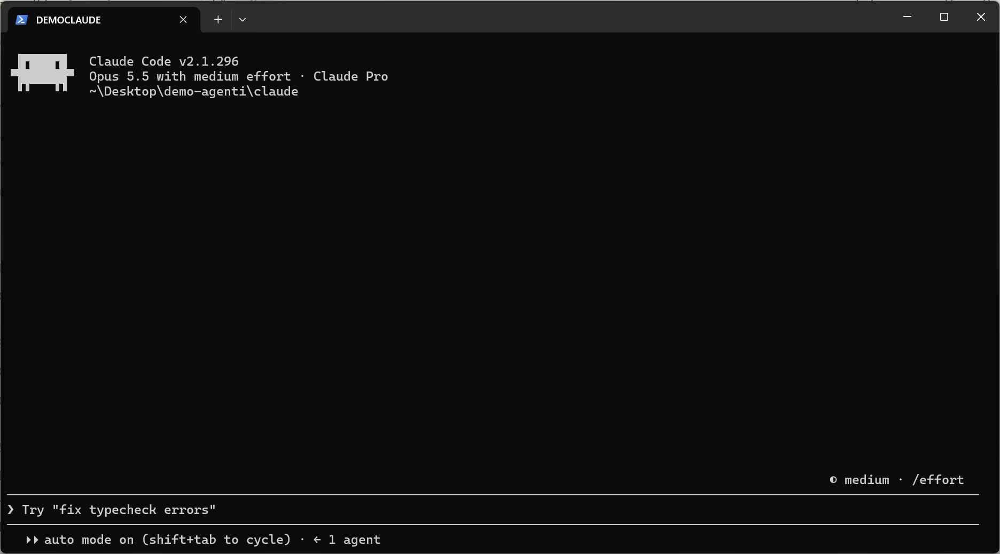
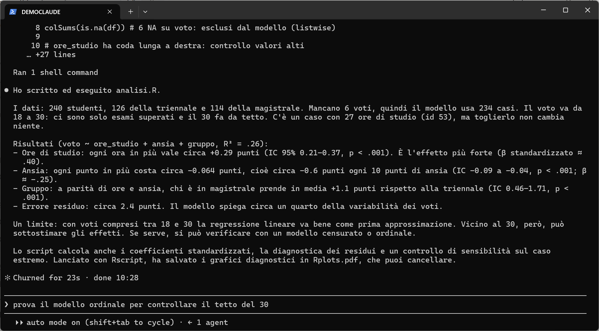
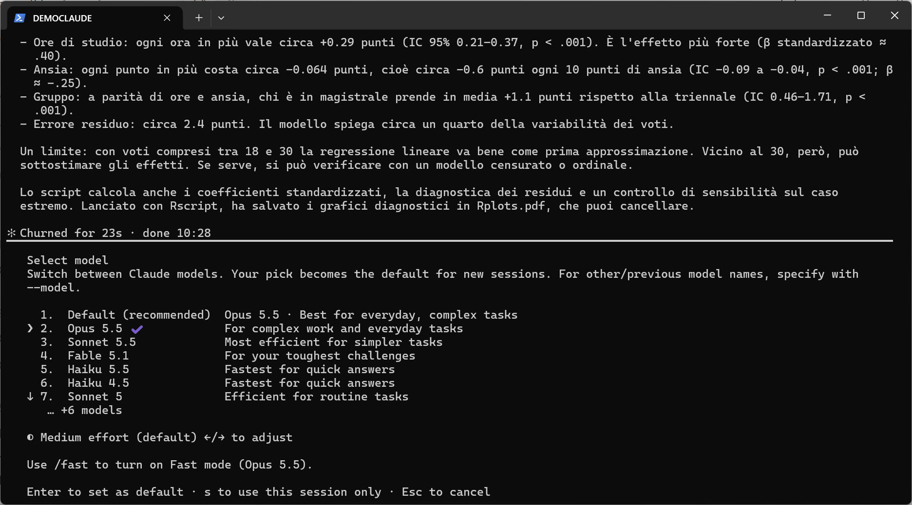
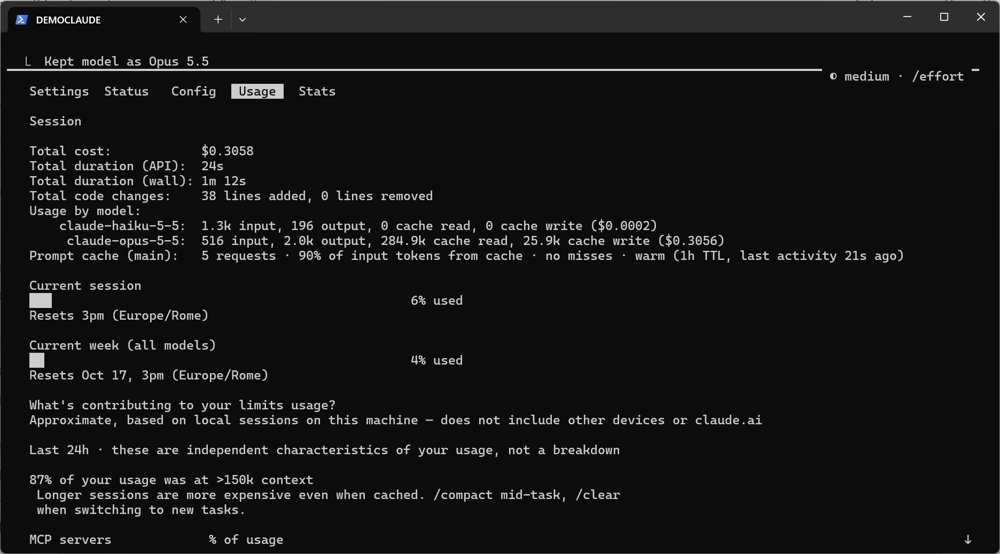
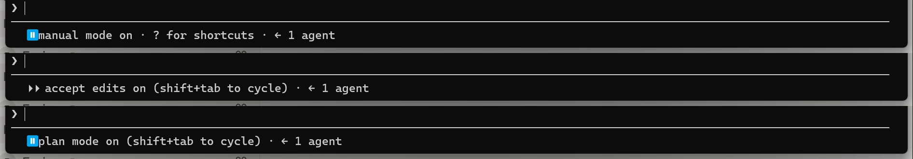
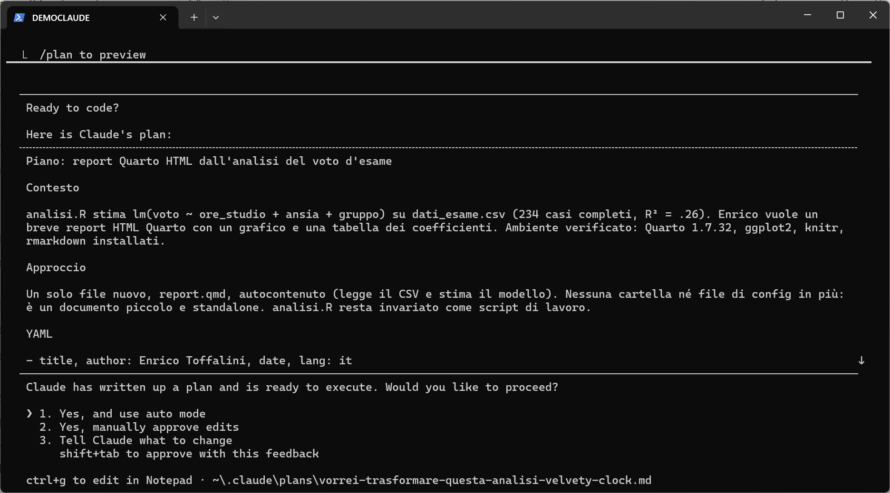
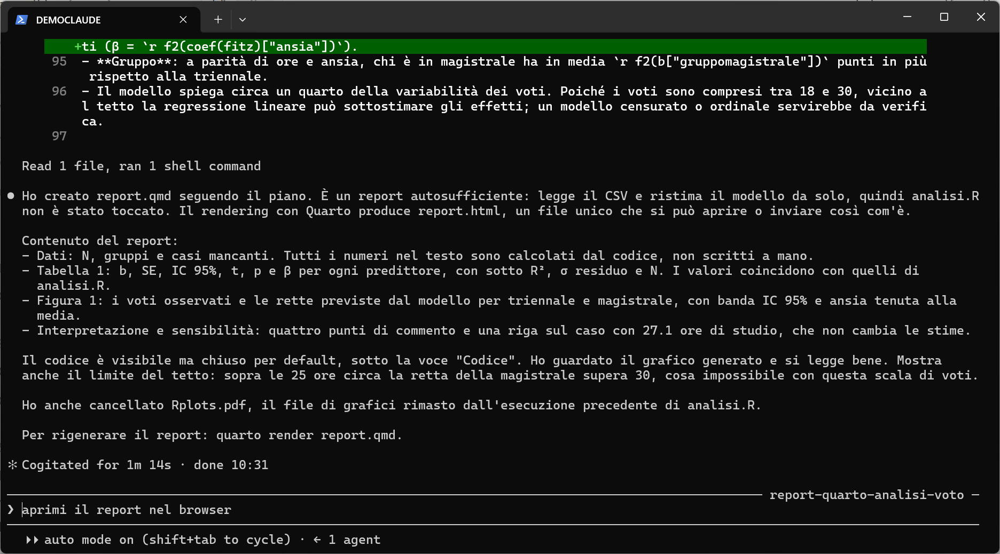

← Torna alla parte generale · Vai alla guida a Codex · Guida alle app desktop
Questa guida mostra i primi passi con Claude Code su Windows (versione usata: 2.1.296, ottobre 2026). Su macOS e Linux i passaggi sono quasi identici: cambia solo il comando di installazione. Le schermate vengono da una sessione reale, in una cartella di prova con un piccolo dataset simulato (un esempio giocattolo inventato da Claude, senza alcun legame con dati o ricerche reali: vedi la nota nella parte generale).
Qui si usa il terminale. Se preferite evitarlo, le stesse cose si fanno dalla scheda Code dell’app desktop di Claude: vedi la guida alle app desktop, che ripete lo stesso esempio.
Obiettivi della guida
- Installare Claude Code e fare il login.
- Dare la prima richiesta su un progetto.
- Scegliere modello ed effort.
- Controllare i limiti di utilizzo residui.
- Capire le modalità di lavoro: auto, manual, accept edits, plan.
Requisiti
- Un account Claude con piano Pro, Max, Team o Enterprise. Il piano gratuito non include Claude Code (vedi la parte generale sui costi).
- Windows 10/11, macOS 13+ o una distribuzione Linux recente.
- Consigliato su Windows: Git for Windows (installazione descritta nel tutorial su Git). Non è obbligatorio, ma Claude Code lavora meglio e potete versionare tutto.
Installazione
Aprite Windows PowerShell (cercatelo tra le applicazioni, oppure tasto destro su una cartella → Apri nel terminale) e incollate:
irm https://claude.ai/install.ps1 | iex
Su macOS / Linux, nel terminale:
curl -fsSL https://claude.ai/install.sh | bash
L’installazione non mostra una barra di avanzamento: aspettate che finisca. Poi chiudete e riaprite il terminale e verificate:
claude --version
Se compare un numero di versione, è tutto a posto. Se il comando non viene riconosciuto, il comando claude doctor e la pagina di troubleshooting aiutano a capire il problema. Le installazioni fatte in questo modo si aggiornano da sole.
Primo avvio
Andate nella cartella del progetto su cui volete lavorare, aprite lì il terminale e scrivete:
claude
La prima volta si apre il browser per il login con il vostro account Claude. Fatto il login, vedrete una schermata simile a questa:

In alto trovate le informazioni principali: modello (qui Opus 5.5), effort (medium), piano (Pro) e cartella di lavoro. Claude Code lavora su quella cartella e sulle sue sottocartelle: è importante lanciarlo nel posto giusto.
La prima richiesta
Si scrive in linguaggio naturale, in italiano, come in chat. La cartella di prova contiene solo un file dati_esame.csv. La richiesta:
In questa cartella c’è dati_esame.csv. Dai un’occhiata ai dati, poi scrivi uno script R chiamato analisi.R che stima una regressione del voto su ore_studio, ansia e gruppo, eseguilo e spiegami i risultati in poche righe.

analisi.R, lo ha eseguito con Rscript e ha riassunto i risultati
In 23 secondi Claude Code ha letto il CSV, controllato i valori mancanti e un caso estremo, scritto lo script, lo ha eseguito e ha riassunto i risultati. Ha anche segnalato un limite non richiesto: con voti compresi tra 18 e 30, vicino al tetto la regressione lineare può sottostimare gli effetti. Lo script analisi.R ora esiste nella cartella e potete aprirlo in RStudio come qualsiasi altro script.
Si può continuare la conversazione: ogni nuova richiesta parte da tutto quello che è già successo nella sessione. Per interrompere l’agente mentre lavora si preme Esc.
Scegliere modello ed effort
Il comando /model apre il selettore dei modelli:

In breve:
- Opus: il default, adatto alla maggior parte del lavoro, anche complesso.
- Sonnet: più economico, va bene per compiti semplici e consuma meno i limiti.
- Fable: il più potente, per i problemi più difficili, ma consuma i limiti più in fretta.
- Haiku: molto veloce, per domande rapide.
L’effort regola quanto il modello ragiona prima di agire: low, medium, high, xhigh, max. Più effort significa risposte più accurate su problemi difficili, ma più lente e più costose in termini di limiti. Si cambia con le frecce sinistra/destra nel selettore, oppure direttamente:
/effort high
Il modello scelto con Invio diventa il default per le sessioni successive; premendo s vale solo per la sessione corrente. Si possono anche impostare all’avvio:
claude --model sonnet --effort low
Un consiglio pratico: partite con il default (Opus, effort medio). Alzate l’effort quando un compito è difficile o l’agente sbaglia. Usate Sonnet per lavori ripetitivi e semplici.
Controllare l’utilizzo residuo
Il comando /usage mostra quanto avete consumato:

/usage: costo stimato della sessione, e soprattutto la percentuale di limite usata nella sessione corrente (finestra di 5 ore) e nella settimana
Le voci più importanti sono Current session (il limite sulla finestra di 5 ore) e Current week (il limite settimanale), con l’orario in cui si azzerano. Le percentuali si riferiscono a tutto l’uso del vostro account (anche da altre sessioni o da claude.ai), non solo alla conversazione aperta. Il “Total cost” in dollari è solo indicativo: con un abbonamento non pagate per singola richiesta, ma consumate i limiti del piano. Raggiunto un limite, Claude Code si ferma fino all’azzeramento, salvo che abbiate attivato il pagamento a consumo (vedi la parte generale).
Il pannello dà anche suggerimenti utili: ad esempio, le conversazioni molto lunghe costano di più. Quando cambiate argomento conviene ripartire con /clear; a metà di un lavoro lungo si può usare /compact, che riassume la conversazione e libera spazio.
Le modalità di lavoro
Con Shift+Tab si passa da una modalità di lavoro all’altra. La modalità attiva è indicata in basso:

Shift+Tab si passa da auto a manual, accept edits e plan
- auto (il default nelle versioni recenti): Claude Code agisce senza chiedere il permesso per ogni comando, ma un secondo modello controlla in background ogni azione e blocca quelle potenzialmente pericolose. È la modalità più comoda per lavori lunghi (però attenzione che può bloccarsi su alcuni comandi delicati e non completare realmente un task finché non si passa alla modalità manual per dare consenso esplicito).
- manual: chiede il permesso prima di quasi ogni azione (modificare file, eseguire comandi, accedere alla rete). Lenta, ma è utile all’inizio per capire come lavora, o su materiale delicato.
- accept edits: modifica i file senza chiedere ogni volta, ma chiede prima di eseguire altri comandi (onestamente mai usata).
- plan: legge ed esplora, ma non modifica nulla. Prima propone un piano; solo se lo approvate passa all’esecuzione.
La modalità plan è la più sottovalutata. Per qualsiasi compito non banale conviene chiedere prima un piano. Nell’esempio ho chiesto, in modalità plan:
Vorrei trasformare questa analisi in un breve report Quarto in HTML, con un grafico e una tabella dei coefficienti. Prima di toccare qualsiasi file, proponimi un piano.

Il piano dice esattamente cosa verrà creato e cosa resterà invariato. Prima di approvarlo, potete correggerlo (opzione 3) o modificarlo a mano (Ctrl+G). Approvato il piano, Claude Code ha creato report.qmd, lo ha renderizzato con Quarto e ha controllato il grafico prodotto:

Il report finale è mostrato nella parte generale.
Riprendere una conversazione
Le conversazioni restano salvate sul vostro computer, legate alla cartella in cui le avete aperte. Se chiudete il terminale per sbaglio, o se il lavoro si è interrotto per un limite di utilizzo, potete riprendere da dove eravate, con tutto il contesto. Dalla stessa cartella:
claude -c # riprende l'ultima conversazione
claude -r # mostra l'elenco delle conversazioni passate e ne fa scegliere unaDentro una sessione già aperta, /resume mostra lo stesso elenco.
Altri comandi utili
| Comando | A cosa serve |
|---|---|
/init |
Crea un file CLAUDE.md con una descrizione del progetto, che Claude Code legge a ogni avvio. Potete aggiungervi convenzioni e istruzioni. |
claude -c |
Riprende l’ultima conversazione in quella cartella. /resume permette di scegliere tra quelle passate. |
/clear |
Nuova conversazione, contesto vuoto. |
/compact |
Riassume la conversazione per liberare spazio, senza perderne il filo. |
/context |
Mostra quanto spazio di contesto è occupato. |
/rewind |
Torna a un punto precedente della conversazione e, se volete, anche del codice. |
/status |
Versione, modello, account. |
/mcp, /skills |
Mostrano connettori e skill disponibili. |
!comando |
Esegue direttamente un comando del terminale (es. !git status). |
/exit |
Chiude Claude Code. |
Digitando / compare l’elenco completo dei comandi.
Connettori e browser
Se sul vostro account claude.ai avete attivato dei connettori (Gmail, Google Calendar, Google Drive, ecc.), con lo stesso login sono disponibili anche in Claude Code. Per far usare il browser all’agente serve l’estensione Claude in Chrome (funziona anche con Edge). Poi si avvia Claude Code con claude --chrome; il comando /chrome mostra lo stato della connessione e permette di abilitarla di default. L’agente apre le proprie schede, ma usa i login del vostro browser: può quindi agire su qualsiasi sito in cui siete già autenticati. Per questo i permessi per ciascun sito si gestiscono dall’estensione, e conviene concederli con giudizio.
← Torna alla parte generale · Vai alla guida a Codex · Guida alle app desktop